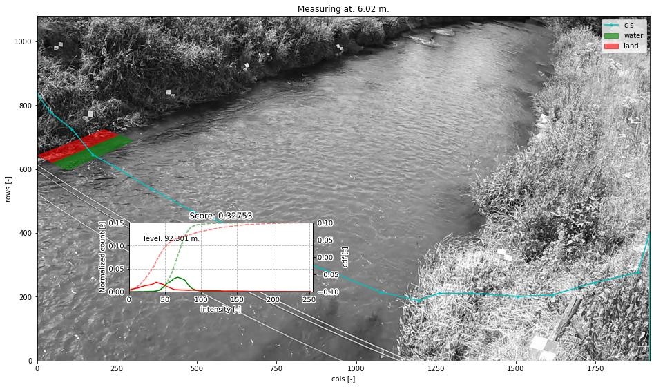

Cross Sections and water level detection#
Cross sections are essential in pyorc for two reasons:
detection of water levels
extraction of a transect of velocities and integration to discharge
Most of this section will go into the water level detection option. It is important to understand the merits, but also the shortcomings of this method before you decide if it is a useful method for your case.
Some principles of water level detection#
It is important to understand how the water level detection works, in order to judge if it is a suitable method for your use case. This water level detection method explicitly uses understanding of the perspective (through the camera configuration) and cross section data as a means to estimate the water level. It does not use any Machine Learning, but instead completely relies on computer vision and statistics to infer a water level. This has benefits but also limitations such as:
benefits machine learning: machine learning approaches may read water levels disregardless of field conditions and understanding of perspective. This may reduce the efforts of field surveying (e.g. control points and cross section measurements). Also, once enough training data over enough conditions and seasons is treated, it may result in a higher accuracy.
Computer vision models, using the perspective, do not require any training data at all. They are also generally lighter and easier to run on simple hardware in the field. As the methods are based on physical understanding of both perspective and segmentation of image conditions that distinguish water from land, it can also more easily be judged if the model will likely work or not work.
To ensure that operational use of the method is possible, without collecting training datasets and training, we decided to start with a fully computer vision based approach. In essence the method work as follows:
You need:
a camera configuration (i.e. containing all perspective information)
an image from the camera of interest, that fits with the established camera configuration. This image can also be derived through processing a video, e.g. taking the mean (to reduce background noise), or the intensity range (increasing visibility of moving/changing pixels, i.e. moving water).
a cross section, e.g. stored in a shapefile or csv file as 3d (x, y, z) points.
If you are able to use the API within python, you can easily visualize these all together. We’ll use here an example of a small concrete channel.
Here, you can clearly distinguish the water line with your eyes: you can only see the water level on the far side as the closer side is obscured by the concrete wall. Furthermore, the concrete has a notable different color and intensity, compared to the water.
The manner in which our computer vision algorithm determines the water level is as follows:
the cross section coordinates can be interpreted in both real-world coordinates (i.e. as provided by you, measured in the field), but also as camera coordinates, i.e. through the camera configuration.
the cross section is made “smart” by enabling all sorts of geometric operations on the cross section. You can for instance see in the right figure, that the cross section is extended up- and downstream so that you can better see the channel shape.
with this “smart” cross section, we draw two polygon on a cross section point, extending left and right of the cross section. We can do this at any random point in the cross section.
we then extract pixel intensities within both polygons, here from a grayscale image, and compare their intensity distribution functions (PDF).
if the distributions are very similar, it is likely that left and right of the point in the cross section, we are looking at similar “stuff”. We see that in the left-side below, where both polygons lie over water.
In the right-hand-side figure below, we see that the polygons are drawn at the opposite side, exactly at the water line. Here the distribution functions are very (in fact, the most!) different. This is therefore the most likely candidate point of the water line.
Then we can simply look up in our original 3-dimensional cross section coordinates, which water level belongs to this water line.
In the figure below you can see
a “score” of 0.83 and 0.21 for the different levels. The lower the score the more likely we have found the water level.
A value of one means the distribution functions are identical, a value of zero means the distribution functions have
no overlap at all. The methods can be applied with an optimization algorithm, that efficiently seeks the location in
the cross section where the two polygons provide the most difference in intensity distribution functions
(CrossSection.detect_water_level). The method can also be applied by setting up a vector of evaluation points.
This results in many scores, which then can be used to both return the optimum and a signal-to-noise ratio using all
other found scores (CrossSection.detect_water_level_s2n). This has the added advantage that one can judge how
trustworthy the result is. The evaluations are fully automated. You only need to provide a cross section file and a
(pre-processed) image.

Hopefully this explanation helps to better understand the water level detection approach. This hopefully also clarifies the limitations. Please note the following two limitations:
the method relies on a clear distinction in color, intensity or other to find the water line. If the water looks very similar to the bank, the algorithm may return a wrong value. In strongly shaded places, the darkness of a shade may look a lot like darkness of water, and therefore if a clear straight shaded line is found, the algorithm can easily mistake the shade line as the water line.
strong seasonal changes in the banks are problematic. For instance, overhanging growth of vegetation during spring and summer will likely cause the waterline to be detected at the edge of the vegetation rather than the real bank. Also in this case you will most likely underestimate the water level, as the water line is estimated to be somewhere in the water, rather than the real bank. Erosion of your cross section can also lead to strong mis-detections of the water level.
Note for instance the example below. We have neatly identified the optimum in this vegetated bank, but it is too far on the water because of the floating grassy vegetation on the water. As a result we have underestimated the water level by about 0.25 meters (compared to a local gauge).
For more advanced control over the optical measurements, you can add details to your recipe that:
define the size and location of the polygons in which intensities are collected, and;
the manner in which a frame is extracted from the provided video.
The size and location of the rectangular polygons can be defined using the following parameters:
offset: the up-to-downstream offset of the polygon in meters. Defaults to 0.0m. This can be useful if the cross section may fall better within the visible domain of the camera if moved slightly up or downstream.length: the up-to-downstream length of the polygon (default: 2 meters)padding: the left-to-right width of the polygons (default 0.5 meters).
Note that the defaults are generally quite appropriate for banks. But there may be other use case conditions. If you for instance decide to build a cross section profile over several staff gauges, it may make a lot of sense to reduce the length to a much smaller size, covering the staff gauge width.
How to work with cross sections#
A cross section must be provided on the command line by using the --cross_wl parameter and a reference
to a GeoJSON or shapefile containing x, y, z Point geometries only! If the file contains a coordinate reference
system (CRS), that will also be interpreted and used to ensure coordinates are (if necessary) transformed to
the same CRS as the camera configuration.
If no external water level is provided (on the CLI using the --h_a option, or by directly inserting
a water level in the recipe under the video section the --cross_wl Points,
will be used by pyorc to estimate the water level optically from an image (see below) derived from the
video.
Note that the CLI option --cross is meant to provide a cross section for estimating the wetted cross
cross section, extract velocities and estimating discharge. These can be the same, but in many cases
the cross_wl cross section may be different, e.g. a line that follows a concrete structure on the bank or
a staff gauge.
For further fine tuning, you can add a water_level section below the video section in your recipe.
Changing the polygon size and location as described, can be done through a subsection water_level_options
e.g. as follows
video: # this is from the earlier example
start_frame: 150
end_frame: 250
h_a: 92.23
water_level:
water_level_options:
length: 10 # meaning we extend the polygon in up-to-downstream direction to 10 meters instead of 2.
padding: 1.0 # make the polygons wider than the default 0.5 meters.
Extracting an image from the video may require specific preprocessing. In fact, all the same preprocessing
methods as available in the frames section can be utilized. Bear in mind that many of these will not
lead to a sharper contrast between water and land. Also bear in mind that after application of the
preprocessing, the resulting set of images on which this is applied are averaged in time. By default a single
grayscale image will be extracted from the first frame in the set of frames identified in the video section
with the start_frame and end_frame settings. But this can be modified. We can also extract e.g. the hue
values, other sets of frames, and even do a full preprocessing on the frames before letting them enter the
water level detection scheme. Finally, by default, the algorithm only looks at the part of the cross section that
is furthest away from the camera, assuming that this side offers best visibility of the shoreline. This can also
be modified to detect using both, or only the nearest shore, but you have to make sure that the camera indeed can
see the shoreline at the nearby water line. Modifying these options can be done following the below recipe as
example:
video: # this is from the earlier example
start_frame: 150
end_frame: 250
h_a: 92.23
water_level:
n_start: 10 # use the 10th frame of the extracted video frames...
n_end: 20 # ...until the 20th frame. The average of the extracted and preprocessed frames is used.
bank: "near" # in case the nearest bank offers full visibility, we may choose to look for the water level on the nearest shore to the camera. Choose "both" for seeking the optimal on both banks
frames_options: # we add preprocessing methods from the frames methods. You can extend this similar to the frames section.
method: "hue" # we can extract the hue channel instead of a greyscale image. Hue essentially represents the color of the frame.
range: {} # range (with empty arguments) extracts the difference between min and max in time, revealing moving water, opposed to non-moving land. Better non use with hue channel
... # other preprocessing after range, remove this line if not used.
water_level_options:
length: 10 # meaning we extend the polygon in up-to-downstream direction to 10 meters instead of 2.
padding: 1.0 # make the polygons wider than the default 0.5 meters.
Finally, you can also supply a signal-to-noise threshold (s2n_thres) to judge whether the detected water
level is distinct enough. By default this value is 3.0 meaning that the optimal minimum score must be at least
3 x lower than the mean of all computed scores. If youj lower this value, you may more easily find a detected
water level but this can also lead to noisy water levels being accepted. You can also stack
frames_options so that when the first preprocessing does not lead to a high enough signal to noise ratio,
the second preprocessing is tried afterwards. This is useful e.g. in situations where during low flows, other
preprocessing leads to good results than during high flows. An example is provided below.
video: # this is from the earlier example
start_frame: 150
end_frame: 250
h_a: 92.23
water_level:
n_start: 10 # use the 10th frame of the extracted video frames...
n_end: 20 # ...until the 20th frame. The average of the extracted and preprocessed frames is used.
bank: "near" # in case the nearest bank offers full visibility, we may choose to look for the water level on the nearest shore to the camera. Choose "both" for seeking the optimal on both banks
frames_options: # we add two preprocessing methods. In case 1 fails detection, we try the second.
- method: "grayscale" # low flows are within a small mountainous channel, mostly detectable by intensity changes
range: {}
- method: "grayscale" # for higher flows, water looks very dark, so pure grayscale works better
water_level_options:
length: 10 # meaning we extend the polygon in up-to-downstream direction to 10 meters instead of 2.
padding: 1.0 # make the polygons wider than the default 0.5 meters.
The API provides powerful mechanisms to both plot the cross section and to use the optical water level
estimation. Starting a cross section requires only a CameraConfig object, and a list of lists containing x, y, z coordinates.
You can also read in a GeoJSON or shapefile with geopandas and simply pass the results GeoDataFrame.
Any coordinates will be automatically transformed to the CRS of the CameraConfig object.
import geopandas as gpd
import matplotlib.pyplot as plt
import pyorc
cs_file = "some_file_with_xyz_point_geometries.geojson"
cc_file = "camera_config.json" # file path of camera configuration file
cam_config = pyorc.load_camera_config(cc_file)
gdf = gpd.read_file(cs_file)
cs = pyorc.CrossSection(camera_config=cam_config, cross_section=gdf)
cs will contain your cross section object. You can perform powerful plotting with
cs.plot(h=93.5) # we plot wetted surface areas and planar surface at a user-provided water level of 93.5.
plt.show()
This will make a plot of the cross section in a 3D axis. If you do this on a interactive axes, you can rotate
the view to gain more insight. The plot contains a bottom profile extended over some length, a wetted surface
and a planar surface area at the user-provided water level. Naturally this level must be in the same datum as
all local datum levels, similar as valid for h_ref in the camera configuration file.
You can switch on and off several parts of the plot, and manipulate colors, linewidth and so on with typical keyword arguments for matplotlib. You can also use separate plot functions for the bottom, planar surface, and wetted surface. This is further explained in the API documentation for cross sections.
You can also easily combine this plot with a neat 3D plot of the camera configuration:
# first define a common axes
ax3D = plt.axes(projection="3d")
cs.plot(h=93.5, ax=ax3D)
# now we add the camera configuration plot
cs.camera_config.plot(ax=ax3D)
plt.show()
It can also be useful to see the plot in the camera perspective. In fact, all geometrical objects that can be
derived from the CrossSection object can be retrieved in camera projected form. This is possible because
the CameraConfig object is added to the CrossSection. Let’s assume we also have a video and want
to plot on top of that, we can do the following:
vid_file = "some_video.mp4"
# derive one RGB image from a video with a common CameraConfig
vid = pyorc.Video(vid_file, camera_config=cam_config, end_frame=100)
imgs_rgb = vid.get_frames(method="rgb") # all frames in RGB
img_rgb = imgs_rgb[0] # derive only the first and retrieve the values. Result is a numpy array
# first define a common axes
ax = plt.axes() # now we make a normal 2d axes
img_rgb.frames.plot(ax=ax)
cs.plot(h=93.5, ax=ax, camera=True)
# now we add the camera configuration plot
cs.camera_config.plot(ax=ax, mode="camera")
plt.show()
It is important to understand the different coordinates available within the CrossSection object.
These are as follows with interpolators referring to methods that provide interpolated values using l as
input or, with suffix _from_s, s as input. s-coordinates can also be derived from l-coordinates with
interp_s_from_l.
Symbol |
Interpolators |
Description |
|---|---|---|
|
|
x-coordinates as derived from the user-provided data |
|
|
y-coordinates as derived from the user-provided data |
|
|
z-coordinates as derived from the user-provided data |
|
|
coordinates as horizontally measured from left-to-right |
|
None |
length as followed from left-to-right bank, including vertical distance. |
|
None |
horizontal distance from the camera position |
From these, the l coordinates are leading in defining a unique position in the cross section. s and z may
also seem suitable candidates, but in cases where vertical walls (or entirely flat bottoms) are experienced,
z (s) does not provide a unique point in the cross section. Only l can provide that. Moreover,
z may provide a value in both the left and right-side of the cross section.
Geometrical derivatives such as lines perpendicular to the cross section coordinates, and the earlier show
polygons can be derived with underlying methods. These largely work in similar manners. Below we show examples
of perpendicular lines and polygons. You can here see that indeed l is used to define a unique location in
the cross section.
# import a helper function for plotting polygons
from pyorc import plot_helpers
pol1 = cs.get_csl_pol(l=2.5, offset=2.0, padding=(0, .5), length=1.0, camera=True)[0]
pol2 = cs.get_csl_pol(l=2.5, offset=2.0, padding=(-0.5, 0), length=1.0, camera=True)[0]
ax = plt.axes()
plot_helpers(pol1, ax=ax, color="green", label="1st polygon (0.5)")
plot_helpers(pol2, ax=ax, color="red", label="2nd polygon (-0.5)")
plt.show()
For other geometries like lines and points (which are simpler), we refer to the API documentation.
The water level detection is available under a method called detect_water_level, and this requires an
extracted image (the numpy values) as input. For instance, for a simple greyscale image, you can call the
method as follows, using the earlier defined vid object as video.
vid.get_frames() # without arguments this retrieves greyscale lazily.
# extract one (the first) frame, and convert to a numpy array.
img = vid[0].values
h = cs.detect_water_level(img)
If you want to manipulate the shape of the polygons over which intensities are sampled, you can alter the
length, padding and offset parameters. For instance, if you have a very straight rectangular concrete
aligned channel, and perfectly identified intrinsic and extrinsic parameters, using a longer polygon shape
can help to improve the water level detection. Assuming you want a 10 meters long polygon and displace it
slightly upstream by 2 meters for better camera coverage, change the above to:
da = vid.get_frames() # without arguments this retrieves greyscale lazily.
# extract the mean of your frames (reduces noise on changing water pixels a lot)
img = da.mean(dim="time").values
h = cs.detect_water_level(img, length=10.0, offset=-2.0) # adjust the polygon shape to better match the situation
# you could also have added `padding=1.0` to make the polygon wider, but we generally don't recommend that.
It may also be worthwhile to consider changing the frame. In the above example, we merely retrieve the mean.
However, to distinguish moving water from non-moving land, it may make sense to consider the fact that moving
pixels are changing in intensity constantly, while non-moving banks are not. Extracting the range in time
between pixel intensities may then reveal a lot of contrast between land and water. You can then use our frames
method range:
da = vid.get_frames() # retrieve a significant number of frames
da_range = da.frames.range() # this extracts the range of pixels and returns a 2-D data-array (without time)
img = da_range.values
h = cs.detect_water_level(img, length=10.0, offset=-2.0)
Another approach can be to retrieve color values, if colors are distinctly different between land and water.
In this case, the hue value may be useful to retrieve.
da = vid.get_frames(method="hue") # retrieve frames with hue channel instead of greyscale
img = da.mean(dim="time").values # get the mean again and retrieve the values
h = cs.detect_water_level(img, length=10.0, offset=-2.0)
Instead of detect_water_level, you can also use detect_water_level_s2n. This evaluates the score on
a vector of possible locations instead of optimizing. The full vector of results is then used to compute a
signal to noise ratio using
where $n$ is the amount of points for evaluation, $gamma$ is the score (minimum is optimum). The evaluation
points are defined along the l-coordinates, such that the maximum vertical distance between two points
is equal to a parameter dz_max and the maximum horizontal distance is equal to parameter ds_max.